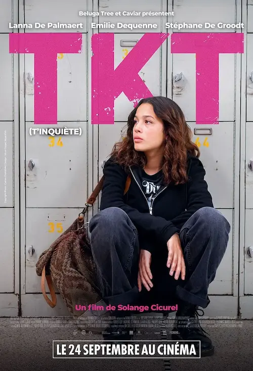
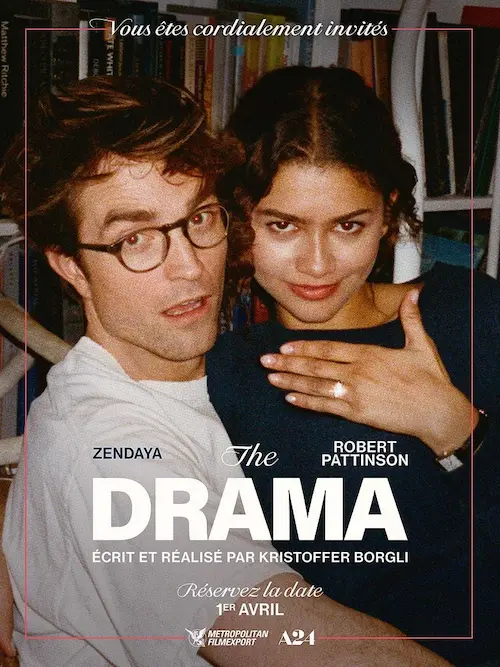
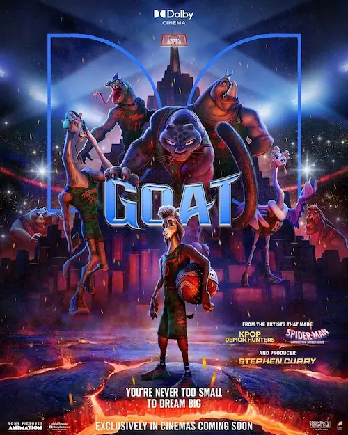
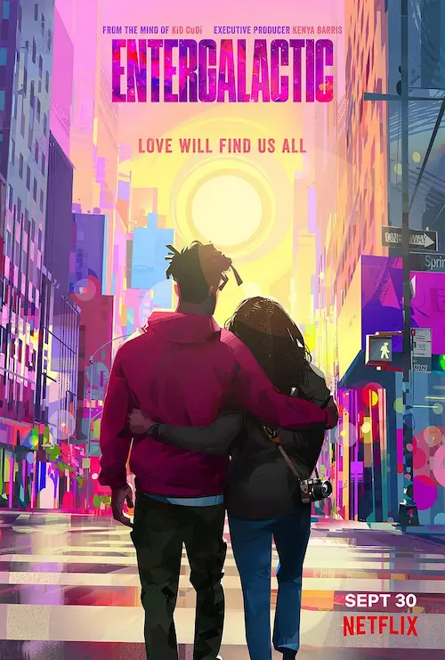
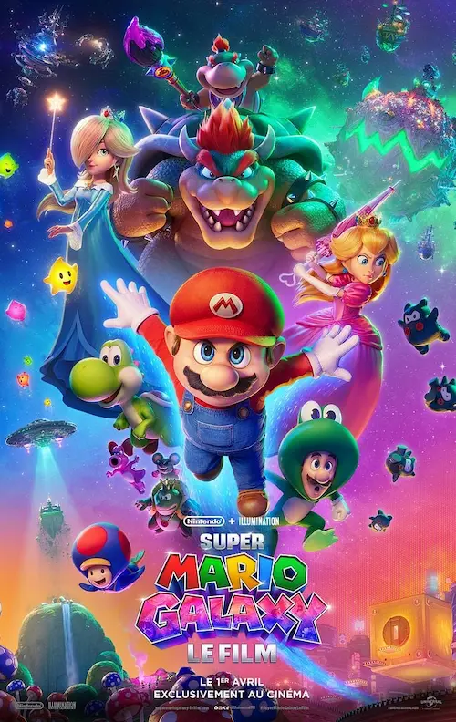
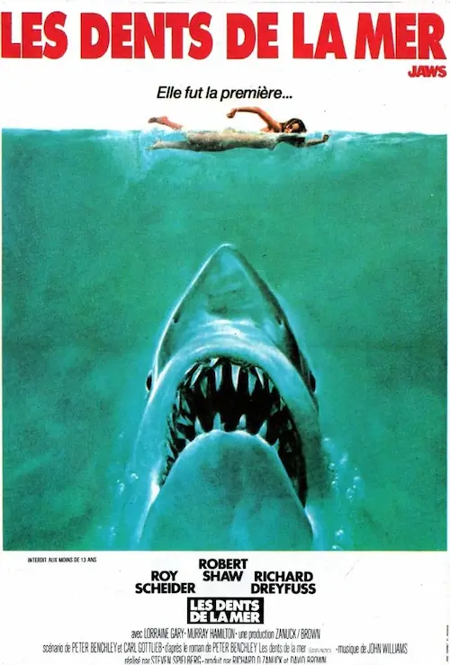

Drames, animation et horreur
Petit topo sur les derniers films que j’ai vus. Il y a de tout. いくぞ !
TKT, 2025
Résumé

Emma, 16 ans, tente de faire taire ses souffrances à coup de somnifères. Entre moqueries, amitiés toxiques et humiliation, sa vie a basculé. Ses parents, désemparés, ne comprennent pas ce qui s’est passé. Elle leur disait pourtant toujours de ne pas s’inquiéter…
Mon avis
Ce film traite d’un sujet profond et dramatique, malheureusement trop présent dans nos sociétés : le harcèlement à l’école et le mal être des jeunes.
Le fond était là, le scénario cohérent. En fait, c’est plutôt un bon film, mais je ne l’ai pas aimé. Trop brut, trop ancré dans la réalité, trop agressif, dérangeant. Et finalement, pas très rationnel avec ce passage où la mère, inconsciente, voit que l’âme de sa fille rôde alentour et lui demande de la laisser partir.
The Drama, 2026
Résumé

Charlie et Emma préparent activement leur mariage. Entre plongées dans les souvenirs, écriture des discours, choix des fleurs, du repas, du vin, etc, ils sont sous pression. Lors d’une soirée arrosée avec des amis, certaines révélations remettent en cause la solidité de leur amour.
Mon avis
Comme pour TKT, le film est bon. Excellent, même ! Le travail sur l’image, l’ambiance autant visuelle que sonore, le montage, les plans bien choisis… C’est du grand art. Tout y est et les comédiens sont exceptionnels (Robert Pattinson est parfait 🥰).
Seulement, le thème est glauque, déroutant. Les réactions même des personnages sont exagérées. Le scénario paraît assez maladroit, du coup. On ne croirait pas voir la vie d’un couple, mais assister à un tragédie au théâtre, ou quelque chose comme ça.
Bref, ça se regarde, mais ce n’est pas terrible.
Goat - Rêver plus haut, 2026
Résumé

Will est un petit bouc qui rêve de jouer au roarball avec les meilleurs. Seulement voilà, les meilleurs sont les animaux les plus féroces du règne animal. Qu’à cela ne tienne ! Il va leur montrer que même les petits peuvent jouer.
Mon avis
L’histoire en elle-même est assez classique. On a déjà vu ce genre de scénario, sous différentes formes. Par exemple, dans Zootopia, le lapin qui veut intégrer les rangs de la police, ou même Bilbon le hobbit qui doit faire ses preuves auprès d’une compagnie de nains guerriers. Rien d’original, donc.
Les ficelles de l’intrigue sont tout aussi classiques, et les rebondissements attendus.
Le style graphique est plutôt dynamique et enthousiasmant, si ce n’est qu’il y a cette espèce d’« anomalie », comme s’il manquait des images, ce qui donne une impression de mouvements saccadés. C’est extrêmement bien placé par moment, et cela offre un dynamisme visuel épatant, mais sur tout le film, ça donne mal au crâne.
Sinon, les personnages sont sympas et l’ambiance « monde du sport », ville, monde miniature, etc, est assez immersive.
J’ai bien aimé, mais sans plus. Il y a de meilleurs films d’animation, tant sur le plan technique que sur le message développé dans l’histoire.
Entergalactic, 2022
Résumé

Jabari, jeune artiste fraîchement embauché par une grande boîte d’édition de comics, emménage à New York. Il cherche l’équilibre entre son nouveau job, ses potes et son amour naissant avec sa jolie voisine, Meadow.
Mon avis
J’ai eu bien du mal à me plonger dans l’histoire. Les personnages et leur propension à la fumette m’ont un peu déstabilisée et gardée à distance, pendant un moment. J’ai fini par accrocher, cependant.
Le style graphique est assez épatant, novateur, inattendu. La bande originale aussi ! Et l’histoire d’amour, quoique assez classique, fonctionne bien.
C’est un film d’animation « tranche de vie », ce n’est pas commun. J’ai plutôt apprécié.
Super Mario Galaxy - Le film, 2026
Résumé

Mario et Luigi poursuivent leur activité de plombier tout en entretenant leur amitié avec la princesse Peach, dans le royaume champignon. Durant la fête d’anniversaire de cette dernière, une étoile du Cosmos vient demander l’aide de nos héros pour sauver une princesse enlevée par le fils de Bowser !
Mon avis
On retrouve indéniablement l’univers de Mario. Le style d’animation est toujours aussi chouette que dans le premier film, il y a de nouveaux personnages rigolos et attachants. Tout semble parfait, mais…
Ce que c’est nul ! L’histoire est barbante et décousue. Les personnages sont séparés juste pour avoir un prétexte à les réunir, alors qu’ils auraient pu partir ensemble dès le départ. L’humour est un peu lourd, les scènes de combat illisibles. Pour moi, ce film n’a pour seule vocation que de faire du fric. Il n’a pas été pensé pour être une œuvre d’art. Il est décevant.
Les dents de la mer, 1976
Résumé

À quelques jours de l’ouverture de la saison estivale, la station balnéaire d’Amityville est marquée par une attaque meurtrière de requin. Les autorités décident dans un premier temps de cacher la vérité au public, pour empêcher les touristes de fuir, mais une nouvelle attaque et la mort d’un enfant mettent au grand jour toute l’affaire.
Mon avis
J’ai noté en titre qu’il s’agit là d’un film d’horreur… Oui et non. Il y a une ambiance forte : on sent le désarroi du chef de la police, l’urgence à intervenir vite, la menace qui rôde. Mais à proprement parler, on ne peut pas dire que ce soit de l’horreur. En tout cas, pas au sens où on l’entend quand on parle de film d’horreur qui font hurler de peur.
Ici, tout est lent. On pose l’histoire et l’ambiance avec lenteur, on prend tout le temps nécessaire avant de nous montrer ne serait-ce qu’un morceau d’aileron du requin. Le thème musical majeur associé à l’attaque du requin est marquant, menaçant, mais le reste de la bande originale ressemble à une mélodie semi épique et amusante. On dirait une blague !
En fait, j’ai ressenti un tel décalage entre ce que j’avais éprouvé il y a des années de cela, et ce que le film m’offre aujourd’hui. Je me suis ennuyée, les trois quarts du temps. Oui, il a fallu que je me raisonne parfois et que je me rappelle que tout ceci n’est que pure fiction et que les informations annoncées sur les requins sont fausses. Donc quelque part, ça fonctionne bien ! Mais la plupart du temps, je me marrais devant tant de bêtises. J’ai donc été plutôt déçue. Je voulais le revoir histoire de prolonger un peu mon rapport à la mer des dernières semaines, suite aux vacances passées sur les côtes. Ce n’était pas franchement immersif.
Comme toujours avec le cinéma, il y en a pour tous les goûts ! Et je me rends bien compte que je ne pense pas comme la majorité des gens quand je vois les notes attribuées aux films sur internet. Il en faut quand-même beaucoup pour faire d’un film un chef-d’œuvre, à mon avis.
Il me reste encore quelques vieux films sur la mer à revoir, histoire de prolonger les vacances. J’espère juste qu’ils seront plus sympas que Les dents de la mer. Il a au moins quelque chose de super, celui-ci, c’est que son titre m’avait inspiré celui de mon court roman Les dents de Chastel. Et ça, c’était comique.